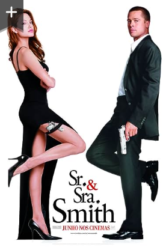

Sr. & Sra. Smith
SINOPSE
A convivência desgastada e a vida monótona em casa faz com que o casamento de John (Brad Pitt) e Jane Smith (Angelina) esteja em ruínas. Mas um "pequeno detalhe" na relação é que um esconde do outro sua verdadeira profissão. Ambos são agentes secretos e trabalham para organizações rivais. Quando a verdade entre Sr. e Sra. Smith é revelada, começa um verdadeiro jogo de gato e rato: um recebe a ingrata missão de matar o outro. Isso tudo, no entanto, dá uma verdadeira apimentada no casamento.